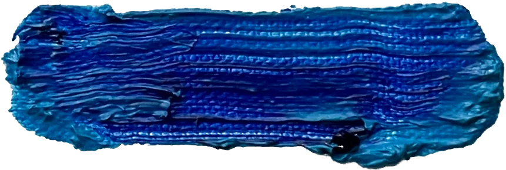
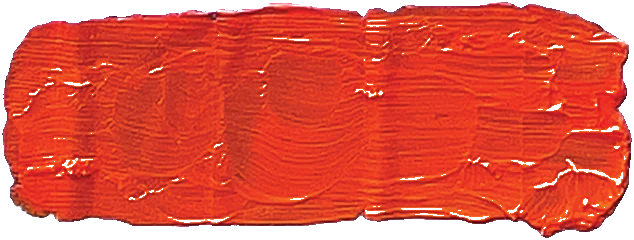
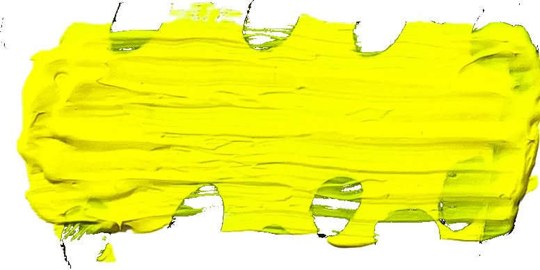

Vague thinking
Like taking a lower bound in mathematics: draw bounds that wrap tightly around the problem, as simple as possible without excluding anything. Every problem is treated as wicked.

A designer of art. I treat every painting, product, and film the way a designer treats a problem: find the bounds that wrap tightly around it, then leave the rest open for the viewer. I call the method Vagueism. I study Design and Mathematics at Northeastern University and show my paintings with the Cambridge Art Association.

“Vagueism is a design methodology that loosely frames problems so that their true boundaries become clear, grounded in a philosophy of anti-solutionism and the loss of access in clarity.” It is how I work in every medium on this page.
What might design look like if we treated vagueness not as a failure to specify, but as a form of care?
It started with Charles Eames’s Design Q&A. Asked “What are the boundaries of design?”, Eames answered, “What are the boundaries of problems?” My classmates heard a designer avoiding the question. I heard one setting its bounds: an answer built to fit the question exactly, open without excluding anything.
The manifesto traces that idea through speculative design (Dunne and Raby), pluriversal design (Escobar), ambiguity as a resource (Gaver, Beaver and Benford), and wicked problems (Rittel and Webber), then tests it on my own paintings and on Gerhard Richter’s.
Like taking a lower bound in mathematics: draw bounds that wrap tightly around the problem, as simple as possible without excluding anything. Every problem is treated as wicked.
The meaning of the work stays open, so the viewer makes it instead of the designer deciding it. Vagueness becomes a power equalizer.
Simplified lines, blurred edges, reduced color, intentional incompleteness. The reduction is what makes the image clear.
Principles 14 through 36 are left open on purpose.
The first work of Vagueism. Bodies reduce to unstable forms where arms and legs become interchangeable. Three red bands stand for the heat of the sun and twelve rows for the darkened fields: together, the fifteen slave states.
Abstraction happens inside the drawn bounds; the realistic eyes, ears, and lips sit outside them in oil. The line between the two stands for the bounds of a problem, and the fingerprints stay in as a mark of the effort.

Each painting asks a question with more than one answer. The vaguest parts are reduced to movement and color. The representational parts (an eye, a mouth, the Mona Lisa) are chosen on purpose, set against the vague ones, and often covered. Every piece hangs at its true size relative to the others.
Vagueism starts from one principle: the artist views the work the way a designer views a problem. Here the problems are a product, a print, and a brand, from a redesigned dress shoe to the identity for my clothing label.
Heels trade comfort for looks. They limit mobility, raise the risk of trips and falls, and can cause blisters after long wear, yet they’re still the most popular women’s dress shoe.
The redesign keeps the stiletto’s silhouette and proportions. Its most striking feature is the metal sole, which suspends the heel: the new weight distribution makes the floating heel possible, and could lead to new design directions.
A solid metal outsole adds weight and durability, a textured upper insole adds grip, and a cushioned toebox stops toe cramming. The result is a hybrid of durability and elegance: a powerful weighted outsole built for an interplanetary traveler.
Every prototype side by side, with a Roberto Cavalli stiletto for reference and the 3D-printed Imagined Stiletto.
3D print of the final prototype, before final materials and inserts.
A late-night-infomercial poster for hand-signed prints of “Where is J.M.B.” and “Mona Lisa,” shot from above on a floor papered with the prints themselves.
Clothing, website, and brand for my own label. These walk cycles put the garments on a 3D figure: one rendered straight, one broken into low-poly facets.
Visual design for streamer OnThatNote TV’s vinyl action figure series. The figure turns once while the render style changes underneath it: soft 3D, flat toon, outlined, then pixel. The final models were prepared for overseas polyethylene mold filling.
Photograph a painting on the museum wall and Proteus names it, reads you its wall label, and adds it to your collection. A map shows the museums near you and the works to look for inside, 112 sets give a visit a purpose, and each profile is hung like a gallery. I lead the technical side and designed the app.
Every new collection starts with one gift: my painting Shadow of Divine Perfection. Free, with no ads and nothing to buy.
Loose bounds still need exact work. The last principle asks for an artist who covers the whole problem “with flawless technical execution.” Seven years of 3D environments and simulation in Blender, Houdini, Unreal Engine, and Reality Capture.
Fluids, soft bodies, rigid bodies, and breaking glass. Each one sets up a few objects, lets the physics run, and keeps the result.
Shorts and performance pieces that leave the meaning for the viewer to make. Shot, built, and cut myself. Hover to preview; click to watch with sound.
Paintings in progress and the ideas behind them, posted as reels at @chuckstoneofficial.
I’m Chuck Stone, a designer of art. I study Design and Mathematics at Northeastern University on a merit-based scholarship, with a semester abroad at University College Dublin, and I paint, model, and film by one method I call Vagueism.
My first instinct is always to make a problem clear so I can start solving it. Vagueism is how I push back: I take time to find the bounds of a problem before answering it, and I leave the person on the other side room to make their own meaning.
I co-founded Proteus, an art museum collection app now on the App Store, where I lead the technical side, and I freelance in visual and product design, from vinyl action figures to branded footwear.